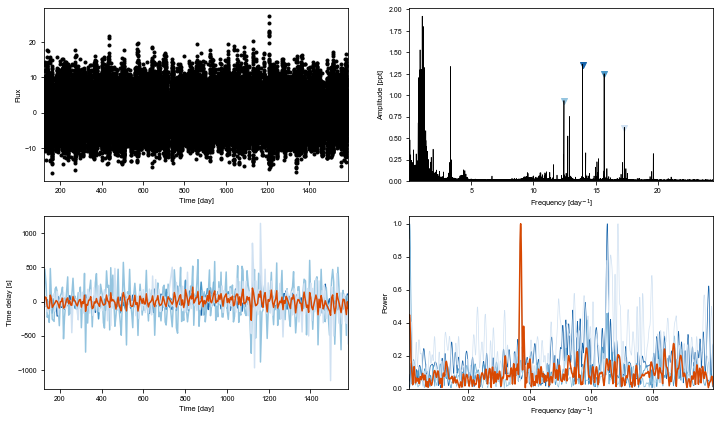

KIC 10080943¶
[2]:
%run setup.py
[3]:
t, y = np.loadtxt('../lc/10080943_lc.txt', usecols=(0,1)).T
from scipy.ndimage import gaussian_filter
from maelstrom.utils import amplitude_spectrum
y_low = gaussian_filter(y,1.8)
y_high = y - y_low
[4]:
ms = Maelstrom(t, y, freq=np.array([13.94758557, 15.68333011,
12.45257641,
17.30504092,
]))
ms.first_look(segment_size=5)
WARNING: AstropyDeprecationWarning: Importing LombScargle from astropy.stats has been deprecated and will no longer be supported in future. Please import this class from the astropy.timeseries module instead [astropy.stats.lombscargle]
[4]:
array([<matplotlib.axes._subplots.AxesSubplot object at 0x110e4dfd0>,
<matplotlib.axes._subplots.AxesSubplot object at 0x13416df60>,
<matplotlib.axes._subplots.AxesSubplot object at 0x1342800b8>,
<matplotlib.axes._subplots.AxesSubplot object at 0x1342b01d0>],
dtype=object)

[9]:
ms.setup_orbit_model(period=15.335878873082686)
opt = ms.optimize()
[5]:
freq = ms.freq
time, flux = ms.time, ms.flux
[6]:
pinned_lt = [
44.,
-43.
]
nu_arr_positive = np.array([
13.94758524
])
nu_arr_negative = np.array([
15.68332996, 12.45257786
])
[7]:
period_guess, a_guess = 15.335878873082686, 43.18400031048695
[18]:
from exoplanet.orbits import get_true_anomaly
import theano.tensor as tt
with pm.Model() as model:
logP = pm.Bound(pm.Normal,
lower=np.log(5),
upper=np.log(50))("logP", mu=np.log(period_guess), sd=10,
testval=np.log(period_guess))
period = pm.Deterministic("period", pm.math.exp(logP))
phi = xo.distributions.Angle("phi")
logs_lc = pm.Normal('logs_lc', mu=0.0001*np.log(np.std(flux)), sd=10, testval=0.)
a1sini = pm.Normal('a1sini', mu=pinned_lt[0], sd=10, testval=pinned_lt[0])
a2sini = pm.Normal('a2sini', mu=pinned_lt[1], sd=10, testval=pinned_lt[1])
nu1 = pm.Normal('nu1', mu=nu_arr_positive, sd=0.001, testval=nu_arr_positive, shape=len(nu_arr_positive))
nu2 = pm.Normal('nu2', mu=nu_arr_negative, sd=0.001, testval=nu_arr_negative, shape=len(nu_arr_negative))
mean = pm.Normal("mean", mu=0.0, sd=1., testval=0.00)
omega = xo.distributions.Angle("omega", testval=0)
eccen = pm.Uniform("eccen", lower=0, upper=1-1e-3, testval=0)
orbit1 = Orbit(period=period,
lighttime=a1sini,
omega=omega,
eccen=eccen,
phi=phi,
freq=nu1)
orbit2 = Orbit(period=period,
lighttime=a2sini,
omega=omega,
eccen=eccen,
phi=phi,
freq=nu2)
full_lc = orbit1.get_lightcurve_model(time, flux) + orbit2.get_lightcurve_model(time, flux) + mean
# # GP parameters
logw0 = pm.Bound(pm.Normal,
lower=np.log(2*np.pi/100.0),
upper=np.log(2*np.pi/0.5))("logw0", mu=np.log(2*np.pi/10), sd=10,
testval=np.log(2*np.pi/10))
logpower = pm.Normal("logpower", mu=np.log(np.var(flux)), sd=100)
logS0 = pm.Deterministic("logS0", logpower - 4 * logw0)
kernel = xo.gp.terms.SHOTerm(log_S0=logS0, log_w0=logw0, Q=1/np.sqrt(2))
gp = xo.gp.GP(kernel, time, tt.exp(2*logs_lc) + tt.zeros(len(time)), J=2)
pm.Potential("obs", gp.log_likelihood(flux - full_lc))
[14]:
with model:
all_but = [v for v in model.vars if v.name not in ["logP_interval__"]]
print(all_but)
map_params = xo.optimize(start=None, vars=[mean])
map_params = xo.optimize(start=map_params, vars=[logs_lc])
# map_params = xo.optimize(start=map_params, vars=[logpower, logw0])
# map_params = xo.optimize(start=map_params, vars=[W_hat_cos_neg, W_hat_cos_pos, W_hat_sin_neg, W_hat_sin_pos])
map_params = xo.optimize(start=map_params, vars=[phi])
map_params = xo.optimize(start=map_params, vars=[nu1, nu2])
map_params = xo.optimize(start=map_params, vars=all_but)
map_params = xo.optimize(start=map_params, vars=[a1sini, a2sini])
map_params = xo.optimize(start=map_params, vars=[omega, eccen])
map_params = xo.optimize(start=map_params, vars=all_but)
# map_params = xo.optimize(start=map_params, vars=[logP])
map_params = xo.optimize(start=map_params, vars=[period])
map_params = xo.optimize(start=map_params, vars=all_but)
[phi_angle__, logs_lc, a1sini, a2sini, nu1, nu2, mean, omega_angle__, eccen_interval__, logw0_interval__, logpower]
optimizing logp for variables: [mean]
5it [00:00, 9.52it/s, logp=-3.836893e+05]
message: Optimization terminated successfully.
logp: -383689.3692174602 -> -383689.3473209515
optimizing logp for variables: [logs_lc]
10it [00:00, 17.42it/s, logp=-1.902093e+05]
message: Optimization terminated successfully.
logp: -383689.3473209515 -> -190209.27938830102
optimizing logp for variables: [phi]
15it [00:00, 15.69it/s, logp=-1.901887e+05]
message: Optimization terminated successfully.
logp: -190209.27938830102 -> -190188.65225111056
optimizing logp for variables: [nu2, nu1]
63it [00:04, 14.42it/s, logp=-1.901886e+05]
message: Desired error not necessarily achieved due to precision loss.
logp: -190188.65225111056 -> -190188.64248278816
optimizing logp for variables: [logpower, logw0, eccen, omega, mean, nu2, nu1, a2sini, a1sini, logs_lc, phi]
189it [00:15, 12.36it/s, logp=-1.302254e+05]
message: Desired error not necessarily achieved due to precision loss.
logp: -190188.64248278816 -> -130225.40368021745
optimizing logp for variables: [a2sini, a1sini]
3it [00:00, 12.62it/s, logp=-1.302254e+05]
message: Optimization terminated successfully.
logp: -130225.40368021745 -> -130225.40368021745
optimizing logp for variables: [eccen, omega]
3it [00:00, 12.80it/s, logp=-1.302254e+05]
message: Optimization terminated successfully.
logp: -130225.40368021745 -> -130225.40368021745
optimizing logp for variables: [logpower, logw0, eccen, omega, mean, nu2, nu1, a2sini, a1sini, logs_lc, phi]
93it [00:07, 12.44it/s, logp=-1.302254e+05]
message: Desired error not necessarily achieved due to precision loss.
logp: -130225.40368021745 -> -130225.40368021684
optimizing logp for variables: [logP]
15it [00:01, 13.92it/s, logp=-1.302254e+05]
message: Optimization terminated successfully.
logp: -130225.40368021684 -> -130225.37380851227
optimizing logp for variables: [logpower, logw0, eccen, omega, mean, nu2, nu1, a2sini, a1sini, logs_lc, phi]
101it [00:07, 12.75it/s, logp=-1.302253e+05]
message: Desired error not necessarily achieved due to precision loss.
logp: -130225.37380851227 -> -130225.34813289758
[15]:
map_params
[15]:
{'logP_interval__': array(-0.05248379),
'phi_angle__': array([-2.6717797 , 3.58629416]),
'logs_lc': array(0.26119389),
'a1sini': array(50.79542626),
'a2sini': array(-43.25748767),
'nu1': array([13.9475852]),
'nu2': array([15.68332996, 12.45257796]),
'mean': array(-0.00610707),
'omega_angle__': array([-0.53364851, 4.44015235]),
'eccen_interval__': array(-0.14562012),
'logw0_interval__': array(2.31626268),
'logpower': array(9.4627941),
'logP': array(2.7305253),
'period': array(15.34094343),
'phi': array(-0.64029173),
'omega': array(-0.11961325),
'eccen': array(0.46319551),
'logw0': array(2.05531472),
'logS0': array(1.24153522)}
[16]:
np.random.seed(42)
with model:
trace = pm.sample(
tune=1000,
draws=1000,
step=xo.get_dense_nuts_step(target_accept=0.9),
start=map_params
)
pm.save_trace(trace,'traces/NEW/10080943_PM')
Multiprocess sampling (4 chains in 4 jobs)
NUTS: [logpower, logw0, eccen, omega, mean, nu2, nu1, a2sini, a1sini, logs_lc, phi, logP]
Sampling 4 chains: 100%|██████████| 8000/8000 [5:48:00<00:00, 1.00draws/s]
There was 1 divergence after tuning. Increase `target_accept` or reparameterize.
[16]:
'traces/NEW/10080943_PM'
[17]:
pm.summary(trace)
[17]:
| mean | sd | mc_error | hpd_2.5 | hpd_97.5 | n_eff | Rhat | |
|---|---|---|---|---|---|---|---|
| logs_lc | 0.261281 | 0.003193 | 4.393561e-05 | 0.255286 | 0.267604 | 5980.546266 | 0.999658 |
| a1sini | 49.287631 | 7.010561 | 1.183314e-01 | 35.606674 | 62.759859 | 3868.013851 | 1.000712 |
| a2sini | -42.206109 | 6.540793 | 1.111247e-01 | -54.374777 | -29.258595 | 3502.439384 | 0.999824 |
| nu1__0 | 13.947585 | 0.000002 | 2.562251e-08 | 13.947581 | 13.947589 | 6405.574228 | 0.999543 |
| nu2__0 | 15.683330 | 0.000002 | 2.494110e-08 | 15.683326 | 15.683334 | 5690.936020 | 0.999624 |
| nu2__1 | 12.452578 | 0.000003 | 4.490430e-08 | 12.452573 | 12.452584 | 5207.806071 | 0.999689 |
| mean | -0.006797 | 0.069632 | 8.497953e-04 | -0.144751 | 0.131210 | 5694.363849 | 0.999799 |
| logpower | 9.463107 | 0.016588 | 2.463962e-04 | 9.431235 | 9.497296 | 5778.224917 | 1.000630 |
| logP | 2.730252 | 0.000627 | 9.720920e-06 | 2.729047 | 2.731490 | 3279.689147 | 0.999839 |
| period | 15.336752 | 0.009619 | 1.490858e-04 | 15.318286 | 15.355754 | 3279.864487 | 0.999840 |
| phi | -0.472232 | 0.777827 | 1.765257e-02 | -2.522813 | 0.895922 | 1334.336271 | 0.999947 |
| omega | -0.074092 | 0.775631 | 1.897814e-02 | -1.903683 | 1.531347 | 1330.547643 | 1.000025 |
| eccen | 0.392994 | 0.196414 | 4.495732e-03 | 0.013374 | 0.719351 | 1813.505828 | 1.000889 |
| logw0 | 2.055292 | 0.008634 | 1.184037e-04 | 2.037984 | 2.071323 | 5861.401945 | 1.000107 |
| logS0 | 1.241938 | 0.027305 | 3.503448e-04 | 1.191491 | 1.296084 | 6479.519124 | 0.999704 |
[18]:
pm.save_trace(trace,'trace/10080943_PM')
[18]:
'trace/10080943_PM'
[19]:
with model:
trace = pm.load_trace('trace/10080943_PM')
[21]:
pm.summary(trace)
/Users/danielhey/anaconda3/lib/python3.7/site-packages/pymc3/stats.py:991: FutureWarning: The join_axes-keyword is deprecated. Use .reindex or .reindex_like on the result to achieve the same functionality.
axis=1, join_axes=[dforg.index])
[21]:
| mean | sd | mc_error | hpd_2.5 | hpd_97.5 | n_eff | Rhat | |
|---|---|---|---|---|---|---|---|
| logs_lc | 0.261281 | 0.003193 | 4.393561e-05 | 0.255286 | 0.267604 | 5980.546266 | 0.999658 |
| a1sini | 49.287631 | 7.010561 | 1.183314e-01 | 35.606674 | 62.759859 | 3868.013851 | 1.000712 |
| a2sini | -42.206109 | 6.540793 | 1.111247e-01 | -54.374777 | -29.258595 | 3502.439384 | 0.999824 |
| nu1__0 | 13.947585 | 0.000002 | 2.562251e-08 | 13.947581 | 13.947589 | 6405.574228 | 0.999543 |
| nu2__0 | 15.683330 | 0.000002 | 2.494110e-08 | 15.683326 | 15.683334 | 5690.936020 | 0.999624 |
| nu2__1 | 12.452578 | 0.000003 | 4.490430e-08 | 12.452573 | 12.452584 | 5207.806071 | 0.999689 |
| mean | -0.006797 | 0.069632 | 8.497953e-04 | -0.144751 | 0.131210 | 5694.363849 | 0.999799 |
| logpower | 9.463107 | 0.016588 | 2.463962e-04 | 9.431235 | 9.497296 | 5778.224917 | 1.000630 |
| logP | 2.730252 | 0.000627 | 9.720920e-06 | 2.729047 | 2.731490 | 3279.689147 | 0.999839 |
| period | 15.336752 | 0.009619 | 1.490858e-04 | 15.318286 | 15.355754 | 3279.864487 | 0.999840 |
| phi | -0.472232 | 0.777827 | 1.765257e-02 | -2.522813 | 0.895922 | 1334.336271 | 0.999947 |
| omega | -0.074092 | 0.775631 | 1.897814e-02 | -1.903683 | 1.531347 | 1330.547643 | 1.000025 |
| eccen | 0.392994 | 0.196414 | 4.495732e-03 | 0.013374 | 0.719351 | 1813.505828 | 1.000889 |
| logw0 | 2.055292 | 0.008634 | 1.184037e-04 | 2.037984 | 2.071323 | 5861.401945 | 1.000107 |
| logS0 | 1.241938 | 0.027305 | 3.503448e-04 | 1.191491 | 1.296084 | 6479.519124 | 0.999704 |
[19]:
import corner
corner.corner(pm.trace_to_dataframe(trace));

[28]:
varnames = ["period", "a1sini", "a2sini","eccen", "omega", "phi"]
for var in varnames:
percentiles = np.percentile(trace[var], q=[15.87, 50, 84.13])
print(f'{var}: {percentiles[1]:.2f} + {percentiles[2] - percentiles[1]:.2f} - {percentiles[1] - percentiles[0]:.2f}')
period: 15.34 + 0.01 - 0.01
a1sini: 49.02 + 7.27 - 6.77
a2sini: -41.87 + 6.11 - 6.70
eccen: 0.40 + 0.20 - 0.23
omega: -0.11 + 0.64 - 0.51
phi: -0.51 + 0.61 - 0.53
[ ]:
from maelstrom.utils import mass_function
import astropy.units as u
rounding = 3
samples = pm.trace_to_dataframe(trace, varnames=['period', 'a1sini'])
mfs = mass_function(samples['PB1_period'].values * u.day, samples['PB1_asini'].values*u.s)
#mfs = np.array(mfs)
upper, med, lower = np.percentile(mfs.value, [84.13, 50, 15.86])
print('mass_func', ': ', np.round(med,rounding), ' + ', np.round(upper - med,rounding), ' - ', np.round(med - lower,rounding))
[ ]:
[ ]:
[ ]: